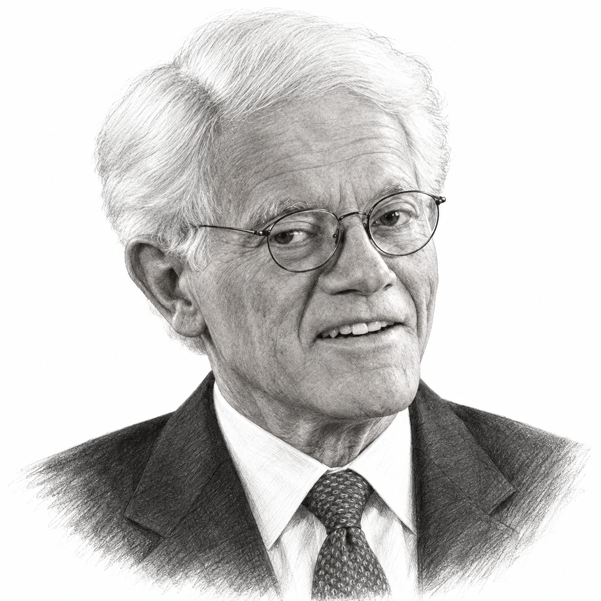
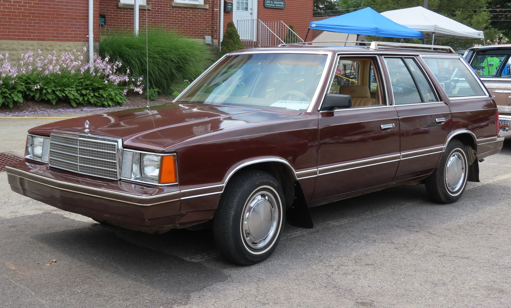

Peter Lynch was born in Newton, Massachusetts, on 19 January 1944, and his early life was shaped by a loss that he would return to decades later when he decided to stop managing money. His father, a mathematics professor at Boston College, was diagnosed with brain cancer when Peter Lynch was seven and died when he was ten, so that his mother went out to work and the boy did as well. In the summer of 1955, aged 11, he began caddying at Brae Burn Country Club in West Newton, which he later called "better than a paper route, and much more lucrative", and he carried bags there for the best part of ten summers.
The golf course turned out to be an education in itself, because the members were executives who talked about the stock market as they walked, and one of the men whose bag he carried was D. George Sullivan, the president of the Fidelity funds in Boston. A Francis Ouimet caddie scholarship paid part of his tuition at Boston College, where he arrived in 1961, and his caddying wages paid most of the rest, while 100 shares of Flying Tiger, an air-freight company purchased at $7 and later worth around $80, helped to pay for what came after.
In the autumn of 1965 Peter Lynch applied for a summer job at Fidelity, where there were about 75 applicants for three places, and he was, as he put it, "the only one who had caddied for the president for 10 years". He spent the summer of 1966 researching paper, chemical and publishing companies, completed an MBA at the Wharton School in 1968, married Carolyn Hoff in the same year, and served two years as a US Army lieutenant before returning to Fidelity permanently as an analyst in 1969, after which he never worked anywhere else.

At Fidelity he covered textiles, metals, mining and chemicals, and from 1974 to 1977 he was the firm's director of research, by which time he had settled on the working habit that defined his career, which was simply to look at more companies than anyone else. "The person that turns over the most rocks wins the game," he said later. In May 1977, aged 33, he was given the Magellan Fund, which Fidelity's own history records as holding around $20m and which had been closed to new investors since 1965, and in his first three years "one-third of the shares were redeemed", so that the early record was built on a shrinking pool of money with nobody much watching.
One of his first purchases was Taco Bell, at a time when, as he put it, "people wouldn't look at a small restaurant company", and he also purchased Hanes, the hosiery maker, after Carolyn Lynch came home with its L'eggs tights, which were sold in supermarkets rather than department stores. Peter Lynch purchased 48 pairs of the competing products and handed them round the office for comparison, and Hanes became his largest holding. It "turned out to be a sixbagger before it was taken over by Consolidated Foods", he wrote in "One Up on Wall Street".
Fidelity opened Magellan to the public in 1981, and the record then became impossible to ignore, because, as Mr Lynch later said, "Magellan had the best five-year record in 1982 and the best five-year record in 1983," by which time it was the largest fund in the United States. His biggest position in October 1982 was Chrysler, the carmaker that most people assumed was heading for bankruptcy, and when he recommended it on television his relatives thought he had lost his judgement. However, he had visited the company, met its chairman Lee Iacocca and walked into a plant to talk to the workers, and Chrysler wound up as one of the largest contributors to the fund's gains in the 1980s.
The method behind these purchases was set out in "One Up on Wall Street", written with John Rothchild and published in 1989 while he was still running the fund. Its central idea was that an ordinary investor who paid attention to the shops, products and employers around them could spot a promising company long before Wall Street did, and Mr Lynch wrote that "nothing has occurred to shake my conviction that the typical amateur has advantages over the typical professional fund jockey." The prize was what he called a tenbagger, a stock that "appreciates tenfold from the initial investment", a handful of which would carry a portfolio even if most of the other choices were ordinary.
However, the book was equally insistent that noticing a product was only the start, because the investor still had to read the accounts and work out what kind of company it was. Peter Lynch sorted companies into six categories, "slow growers, stalwarts, fast growers, cyclicals, asset plays, and turnarounds", so that the questions to ask of a cyclical such as Chrysler, whose profits rose and fell with the economy, were different from those to ask of a fast grower such as Taco Bell, whose value depended on how many more towns it could expand into. Of investors who skipped this work he wrote: "They don't own what they don't understand, and neither do I."
He has spent a good deal of the years since correcting the shorthand version of this advice. "I've never said, 'If you go to a mall, see a Starbucks and say it's good coffee, you should call Fidelity brokerage and buy the stock,'" he told the Wall Street Journal in 2015, and in 2019 he put the test differently: "If you can't convince an eight-year-old why you own this thing, you probably shouldn't own it."

The record was not built without setbacks, and the largest came in October 1987, when Peter Lynch was on his first visit to Ireland. The market fell on Friday 16 October and then by more than 20% on Monday 19 October, and Time magazine, which reconstructed the week a few months later, reported that Magellan's assets dropped from $10.7bn to $7.7bn over the two business days he was away, as redemptions of $265m and then $150m forced Fidelity to sell close to $1bn of shares on the Monday alone. "So in two business days I had lost a third of my fund," says Mr Lynch, who flew home on the Tuesday and worked until almost midnight. "Tuesday was the worst day of my career."
He did not pretend afterwards that he had seen it coming, telling Time that "I was caught in a trap" and "should have paid more attention to the red flags out there", and the practical consequence was that he began holding 3% to 5% of the fund in cash so that he could meet withdrawals without selling what he wanted to keep, a reserve that exceeded $1bn by early 1990 across roughly 1,400 stocks. However, he never claimed to be able to time such falls, and he treated them as part of the cost of owning shares, pointing out in the mid-1990s that there had been 53 declines of 10% or more in 95 years, of which 15 were falls of 25% or more. "Whenever the market went down, I went down more," he said in 2019. "I had a perfect record. I went down more than 10% every time."
Fannie Mae, the government-sponsored mortgage lender, showed what patience could do with a large fund. Having purchased 30,000 shares in 1977 and sold them too soon, Peter Lynch bought back in 1982, 1984, 1987 and 1988, adding as the company's profits improved, so that by 1990 it was Magellan's largest holding. In "Beating the Street" he put Magellan's profit from it at around $500m over five years and Fidelity's across all its funds at more than $1bn, which he thought "may be an all-time record for profits for a single firm from a single stock".
By 1990 Magellan had around a million shareholder accounts and $13.3bn in assets, and on Wednesday 28 March Fidelity announced that Peter Lynch would retire from the fund at the end of May. He was 46, the age at which his father had died, and he said so. He had been working six days a week since the early 1980s, with Sunday mornings before Mass added in the last 18 months, and when his doctor asked what he did for exercise, "the only thing I could come up with was that I floss my teeth at night." Fidelity's chairman, Edward Johnson III, had tried to persuade him to stay in a less demanding post, but he telephoned the firm's president on 25 March to confirm his decision. "The pressure wasn't it. It was just too much time," he said later.

The record he left is usually stated as a single figure: 29.2% a year, compounded, from May 1977 to May 1990, which is the number Fidelity uses and which means that $1,000 placed in the fund at the start had grown to around $28,000 by the end. It is a fund return, after Magellan's expenses, over a period in which the S&P 500 returned roughly 16% a year with dividends reinvested, and the fund beat the index in all but two of those years. The growth in assets from $20m to $14bn is a different thing altogether, because most of it was new money arriving from investors who had read about the earlier returns, and none of this is a forecast, either for Magellan, which has had several managers since and spent long periods behind the index, or for anyone trying to copy the method.
He was clear about what he had missed as well as what he had caught, telling CNBC in 2023 that he had watched his daughter buy an iPod in the early 2000s, learned how much profit Apple made on each one, and still not purchased the shares. "Apple was not that hard to understand," he said. "I mean, how dumb was I?"
He kept his word about not running money again. "Beating the Street", a fuller account of how he had managed Magellan, appeared in 1993, and "Learn to Earn", a primer for teenagers, in 1995, with the royalties from all three going to charity. He and Carolyn Lynch had set up the Lynch Foundation in 1988 with $2m, and it became the vehicle for gifts that included $10m to Boston College in 1999, after which its school of education was named for them. As chairman of what is now the Catholic Schools Foundation he raised more than $250m in scholarships for children in Boston's inner-city Catholic schools, a role he describes as "chief begging officer", and he remained at Fidelity as vice-chairman of Fidelity Management & Research, meeting the firm's new analysts several times a year.
Carolyn Lynch died on 1 October 2015, aged 69, of complications from acute myeloid leukaemia, after 46 years of marriage. Peter Lynch was inducted into the Caddie Hall of Fame in 2023, received the Museum of American Finance's lifetime achievement award in March 2025 and, on 7 October 2026, aged 82, was given the inaugural DeVos Family Prize for Leadership in Giving, directing the $100,000 that came with it to the Catholic Schools Foundation. He still lives in Boston, and he still says of the business that made his name that "investing in stocks is an art, not a science."
The record
| Measure | Fidelity Magellan under Peter Lynch | S&P 500 |
|---|---|---|
| Period | May 1977 to May 1990 | Calendar years 1978 to 1989 |
| Compound annual return | 29.2% | 16.5% (total return, dividends reinvested) |
| Growth of $1,000 | Around $28,000 | Around $6,250 |
| Fund assets at start, May 1977 | Around $20m | — |
| Fund assets at end, May 1990 | $14.0bn | — |
| Fall in fund assets, 16 to 19 October 1987 | $10.7bn to $7.7bn (including redemptions) | — |
The 29.2% is the figure Fidelity and the Museum of American Finance give for the fund's compound annual return over the 13 years, in US dollars, after the fund's own expenses but before any sales charge paid by the investor, and the $28,000 is the Museum of American Finance's statement of what $1,000 became. Year-by-year Magellan returns for the period were not available from a primary source, so the S&P 500 comparison is calculated from the index's annual total returns for the twelve full calendar years inside his tenure, using Aswath Damodaran's dataset; it is not an exact match for May 1977 to May 1990 and is given to show the scale of the gap rather than its precise size. Secondary accounts put the fund's starting assets anywhere between $18m and $22m. The asset figures measure money flowing in as well as returns, and nothing here covers Magellan after Peter Lynch left.
Life in dates
- 1944Born in Newton, Massachusetts, on 19 January.
- 1954His father, a Boston College mathematics professor, dies of brain cancer. Begins caddying at Brae Burn Country Club in 1955, aged 11.
- 1961Enters Boston College on a Francis Ouimet caddie scholarship; graduates in 1965.
- 1966Summer intern at Fidelity, where he had caddied for the president, D. George Sullivan.
- 1968Completes his MBA at Wharton. Marries Carolyn Hoff.
- 1969Returns to Fidelity as an analyst after two years as a US Army lieutenant.
- 1974Becomes Fidelity's director of research.
- 1977Takes over the Magellan Fund in May, aged 33, with around $20m in assets.
- 1981Magellan opens to the public for the first time since 1965.
- 1982–83Magellan tops the five-year performance rankings in both years, by Mr Lynch's account, and becomes the country's largest fund. Chrysler is the largest holding in October 1982.
- 1987Loses roughly a third of the fund's assets in two days during the October crash.
- 1988Sets up the Lynch Foundation with Carolyn Lynch.
- 1989"One Up on Wall Street" is published.
- 1990Fidelity announces his retirement on 28 March; leaves Magellan at the end of May, aged 46. Becomes vice-chairman of Fidelity Management & Research.
- 1993"Beating the Street" is published, followed by "Learn to Earn" in 1995.
- 1999Gives $10m to Boston College, whose school of education is named for the Lynches in 2000.
- 2010A further $20m to Boston College funds the Lynch Leadership Academy.
- 2015Carolyn Lynch dies on 1 October, aged 69.
- 2023Inducted into the Caddie Hall of Fame.
- 2025Receives the Museum of American Finance Lifetime Achievement Award on 6 March.
- 2026Receives the inaugural DeVos Family Prize for Leadership in Giving on 7 October, aged 82.
Sources
- Fidelity Magellan Fund quick facts (Fidelity): managers and tenures, starting assets of $0.02bn under Lynch and $14.0bn under Morris Smith, closure to new investors 1965 to 1981.
- Peter Lynch interview, PBS Frontline "Betting on the Market" (c. 1996): caddying, Flying Tiger, Magellan at $20m in May 1977, early redemptions, Hanes and L'eggs, Taco Bell, Chrysler, 1987 in Ireland, the 53 declines, reasons for retiring.
- Time, "Up, Up, Then Doooown", 4 January 1988: the 1987 crash week, asset fall from $10.7bn to $7.7bn, redemptions, sales, the "caught in a trap" and "worst day of my career" quotations, cash policy.
- Time, "The Wizard Bows Out", 9 April 1990: the retirement announcement, $13.3bn in assets, 1,400 stocks, hours worked, his father's death at 46, Edward Johnson III, Morris Smith, Chrysler plant visit, Hanes gain of around 600%.
- Deseret News (Andrew Leckey), 7 January 1990: top holdings including Fannie Mae, 1,400 stocks, cash reserve, target of beating the market by 4 to 6 points, Wal-Mart and Marriott missed.
- Museum of American Finance, Peter S. Lynch and 2025 Gala press release: May 1977 to May 1990, 29.2% a year, $1,000 to about $28,000, largest fund by 1983, vice-chairman role, 2025 award.
- One Up on Wall Street, Simon & Schuster (1989; Millennium edition 2000): publication details and the tenbagger, amateur's edge and "don't own what they don't understand" quotations.
- Reader highlights from One Up on Wall Street (Goodreads): the six categories, the Hanes "sixbagger" passage, the Chrysler and homework quotations, as reproduced by a third party.
- Wharton Magazine, "Stock Superstar Who Beat the Street": "turns over the most rocks", Hanes as largest holding, two years of underperformance against the S&P 500.
- Wall Street Journal via ValueWalk, "Peter Lynch, 25 Years Later", 7 December 2015: the Starbucks misquotation and the steel-industry example.
- Fox Business and Barron's interview transcript, 20 December 2019 (GeoInvesting): "know what you own", Dunkin' Donuts, "I went down more than 10% every time".
- Fidelity Learning Center transcript, "Investing legends": the eight-year-old test and "look at the financials", from the December 2019 Barron's interview.
- Fortune, 26 April 2023: the Apple and iPod admission from his CNBC interview.
- Motley Fool, 13 November 2006: Fannie Mae purchases and the profit figures as given in chapter 18 of "Beating the Street".
- Korn Ferry Briefings, "The Toll of Being the Best": the 1990 Wall Street Journal quotations on Saturdays, Sunday mornings and flossing.
- Sports Illustrated, 16 October 2000: his father's profession and death, caddying from 1955, the Ouimet scholarship and tuition, the 1965 Fidelity application.
- Fortune, 17 July 2013: "better than a paper route", the 75 applicants, caddying for the president.
- Caddie Hall of Fame, Peter Lynch: Brae Burn, Ouimet scholarship, Army lieutenant, 2023 induction.
- Philanthropy Roundtable, 7 October 2026: the DeVos prize, age 82, Boston College from 1961, marriage in 1968, the Lynch Foundation's founding in 1988 with $2m, scholarship totals, "chief begging officer", "art, not a science".
- Boston College, "About Carolyn A. and Peter S. Lynch" and Boston College alumni biography: class of 1965, the 1999 and 2010 gifts, the naming of the Lynch School in 2000, Lynch Foundation founded 1988.
- Penn Almanac obituary of Carolyn Hoff Lynch, 13 October 2015: her death on 1 October 2015, aged 69, cause, three daughters.
- The Lynch Foundation, Peter Lynch: "beat the market by over 14% a year", books' royalties to charity, vice-chairman role.
- Aswath Damodaran, historical returns on stocks, bonds and bills: S&P 500 annual total returns used for the 1978 to 1989 comparison.
- Wikipedia: Peter Lynch: date of birth, his father's diagnosis and death, the Flying Tiger purchase, Wharton 1968 and analyst roles, used where no primary source was reachable.